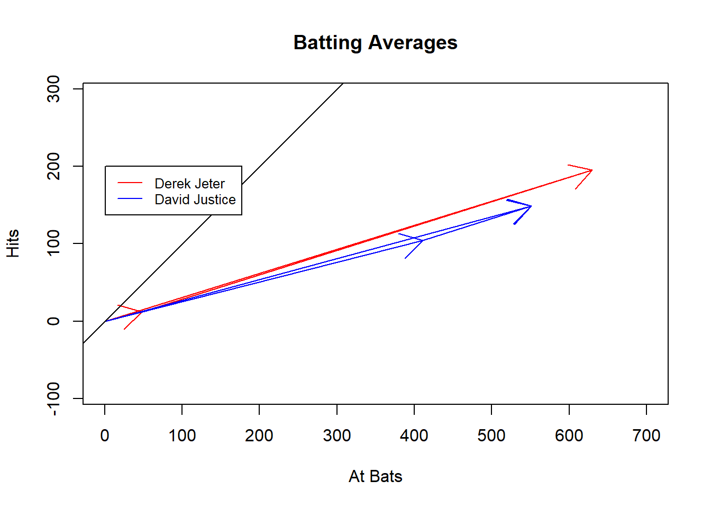

1.4 Visualizing data (Re-representation)
We are still in the transformation or re-representation of information phase. Visualization helps in this phase of the analysis project. We will present many different types of visualizations and this is a transition to the next phase of the analysis titled manipulation. Having to write code over and over with small changes will lead us to the interaction phase. We will first address visualization. Although some authors would not consider tables as a visualization of data, we do. In this section, we will use two different forms of visualization, both a table and a vector plot.
1.4.1 Background on Visualizing Data
Data visualization is a complicated and important subject. You can get advanced degrees in the subject. We will only give the basics principles and ideas in this section. There are three things that should always inform the visual summary you select and/or design. First, you must decide which ideas are important to communicate to the reader. This requires you to identify your key message, filter and summarize the data to a point that maintains that message without over-compressing the data, and finally think about how to communicate this idea. Second, what is the reader’s background and how will they understand or what will they take away from the visualization? Tufte states that you should “respect your audience”. Think about such factors as how short-term memory limits the amount of information a reader can hold and how preattentive thought quickly picks up position, motion, shape, and color first. Finally, consider the data type(s), what are the advantages and disadvantages of the data, what information is contained in the data, and what tools are needed to visualize this data? For example, color does a nice job with discrete variables although it could be used as a gradient for continuous variables. Length is good for continuous variables. Area is difficult for readers to compare although rectangular is not as difficult because of the linear comparison of each side.
Figure 1.1, adopted from Friendly and Meyer (2016), is an excellent framework for thinking about visualization. Often, we first start in the analysis phase. For our current problem we are in the analysis phase with comparison being the primary design principle; we want to compare Derek Jetter to David Justice. At the end of the analysis we must present the results and this puts us in the presentation section. In each case the reader is different. In the analysis phase, we, the analyst, are the reader and maybe a few others on the analysis team. In the presentation, the readers can be from a variety of backgrounds often leading to a simpler presentation.
knitr::include_graphics("./images/VisPurpose.png")
Figure 1.1: Visualization Purposes
1.4.2 Using Problem
In the batting average problem, we have compressed the results of individual bats into an average. There was also the choice to leave year as a separate variable or to compress further into a single summary. The compression to a batting average, weather accounting for year or not, lost an important element of the data and that is the magnitude of number of bats. Understanding our reader, in this case the analyst but ultimately any reader for presentation, we should expect that most people will consider the value of the batting averages for each player during each year to be of equal value, that is they assume that the number of at bats is approximately equal. Thus, in this example they will either compare Derek Jeter against David Justice each year or simply average the two years into a single number to make a decision on the better batter. In either case, the reader may conclude that David Justice is the better batter. In developing our visual summaries we will have to take this into consideration.
1.4.3 Discussion ideas
The tables in the previous section are visual summaries but what are the limitations? What are the key idea(s) for this problem? How would you visualize this data?
Most students will only think about tables. In considering tables, how should the variables be ordered? That is, which variables should be rows and which should be columns? Should you use shading in the tables?
1.4.4 Visualization
We will examine two ways to visualize the data in our batting average problem. First we will continue to look at the tables and then move to a visualization that utilizes vectors.
1.4.4.1 Tables for Visualization
In this section we will go through a series of tables and discuss advantages and disadvantages of each.
1.4.4.1.1 First Table
The first table from the software is a default and looks like
table(MLB_long)## , , Result = Hit
##
## Year
## Player 1995 1996
## David Justice 104 45
## Derek Jetter 12 183
##
## , , Result = Out
##
## Year
## Player 1995 1996
## David Justice 307 95
## Derek Jetter 36 399Ask your students about their thoughts on this table.
Some ideas that may come include the lack of a title, the use of “, ,”, and having the split on result because it is difficult to mentally combine for comparison. Remember that the reader of this table is the analytic team. As an analyst, the use of “, ,”" in the titles and the splitting of result into two table may not bother you but it is still inefficient. Plus you as the analyst want the ability to control how the variables are arranged.
1.4.4.1.2 Additional Tables
Let’s start by finding a better representation of the table.
ftable(table(MLB_long))## Result Hit Out
## Player Year
## David Justice 1995 104 307
## 1996 45 95
## Derek Jetter 1995 12 36
## 1996 183 399The advantage of this figure did not split the data. Note that the software automatically placed Player and Year in the rows. This placement makes it difficult to compare the years since they are separated by one line.
Next, we will sort the variables by the comparison we want to make. In this case we want players within years. This is called effect-ordering sorting (Friendly and Kwan 2003).
ftable(table(MLB_long),row.vars=c("Year","Player"))## Result Hit Out
## Year Player
## 1995 David Justice 104 307
## Derek Jetter 12 36
## 1996 David Justice 45 95
## Derek Jetter 183 399As we discussed in Section 1.2, the transitions between analysis, visualization, and interaction may be a cycle. So next we need to get the number of at bats.
data.frame(MLB_long %>%
group_by(Player,Year,Result) %>%
summarise(Hits=n()) %>%
filter(Result=="Hit") %>%
left_join(MLB_long %>%
group_by(Player,Year) %>%
summarise(At_Bats=n()),by=c("Player","Year")) %>%
select(-Result) %>%
arrange(Year))## Player Year Hits At_Bats
## 1 David Justice 1995 104 411
## 2 Derek Jetter 1995 12 48
## 3 David Justice 1996 45 140
## 4 Derek Jetter 1996 183 582This is getting better although we lost year as an outer row variable and we still need average instead of hits.
data.frame(MLB_long %>%
group_by(Player,Year,Result) %>%
summarise(Hits=n()) %>%
filter(Result=="Hit") %>%
left_join(MLB_long %>%
group_by(Player,Year) %>%
summarise(At_Bats=n()),by=c("Player","Year")) %>%
mutate(Average=Hits/At_Bats) %>%
select(Year, Player,Average,At_Bats) %>%
arrange(Year))## Year Player Average At_Bats
## 1 1995 David Justice 0.2530414 411
## 2 1995 Derek Jetter 0.2500000 48
## 3 1996 David Justice 0.3214286 140
## 4 1996 Derek Jetter 0.3144330 582This is a nice summary and makes it clear that we have years with a small number of at bats. We still have to clean up some things to improve the visualization. What are some ideas to improve it?
A caption should be provided with enough detail to describe the table. In addition, the default of 7 decimal places is too much. We will use 4 decimal places.
knitr::kable(data.frame(MLB_long %>%
group_by(Player,Year,Result) %>%
summarise(Hits=n()) %>%
filter(Result=="Hit") %>%
left_join(MLB_long %>%
group_by(Player,Year) %>%
summarise(At_Bats=n()),by=c("Player","Year")) %>%
mutate(Average=round(Hits/At_Bats,4)) %>%
select(Year, Player,Average,At_Bats) %>%
arrange(Year)),caption="Batting Averages and Total at Bats for Both Years")| Year | Player | Average | At_Bats |
|---|---|---|---|
| 1995 | David Justice | 0.2530 | 411 |
| 1995 | Derek Jetter | 0.2500 | 48 |
| 1996 | David Justice | 0.3214 | 140 |
| 1996 | Derek Jetter | 0.3144 | 582 |
Finally, we should combine both years. It is clear that we can’t just average the averages since the total at bats is different. We need to find the total hits and divide by the total at bats. This is Table 1.3 with the addition of the total at bats.
knitr::kable(MLB_long %>%
group_by(Player,Result) %>%
summarise(Hits=n()) %>%
filter(Result=="Hit") %>%
left_join(MLB_long %>%
group_by(Player) %>%
summarise(At_Bats=n()),by="Player") %>%
select(-Result) %>%
mutate(Average=round(Hits/At_Bats,4)) %>%
select(Player,Average,At_Bats) %>%
arrange(desc(Player)),caption="Combined Batting Average for Both Years with Total at Bats")| Player | Average | At_Bats |
|---|---|---|
| Derek Jetter | 0.3095 | 630 |
| David Justice | 0.2704 | 551 |
The two players had similar number of at bats but Derek Jeter had the higher batting average.
1.4.5 Vectors for Visualization
Since batting average is more a quantitative variable than a qualitative, we decided to use position to represent batting average. The x-axis is the number of batting attempts and the y-axis is the number of hits. The average is the angle, or the slope of the line. Angles are difficult to estimate but easy to compare. We used color to separate the two batters only for the combined years. We included the individual year breakdown but they are difficult to see. We included points to bring them out. The combination of years, or the calculation of combined batting average, is a vector addition and not the addition of fractions. Vectors have both direction and length. The direction is the number of hits over number of at bats, the traditional batting average. The length is related to the number of at bats. The plot shows that Derek Jeter’s combined batting average gets pulled more towards the second year when he had more at bats. The opposite is true for David Justice and that is why we get the reversal.
This might be hard to see in the document so you can open it separately as pdf to see the design better. The link is http://bit.ly/2tP05tU
Discussion question: What do you like about the plot? What are the strengths and weaknesses? What changes would you make? Is it better to put the players’ years end to end or does that hide that David Justice is better in each individual year? Does the color help or hurt?
Note for discussion: The angle is the batting average, should we use white space and put an explanation into the graph? What if we had three years, how would we represent them? The labels overlap the lines, should we move them? Hook to next lesson: interaction could help us by selecting a year and turning it off or make more transparent. This question will lead to interaction section.
#par(pty="s")
#plot(1,type="n",xlim=c(0,700),ylim=c(0,200),xlab="At Bats",ylab="Hits",asp=1)
plot(1,type="n",xlim=c(0,800),ylim=c(0,800),xlab="At Bats",ylab="Hits",asp=1)
arrows(0,0,200,50,col="red")
arrows(200,50,400,150,col="red")
arrows(0,0,400,150,col="red")
abline(0,1)
#par(pty="s")
#plot(1,type="n",xlim=c(0,700),ylim=c(0,200),xlab="At Bats",ylab="Hits",asp=1)
plot(1,type="n",xlim=c(0,700),ylim=c(0,200),xlab="At Bats",ylab="Hits")
arrows(0,0,48,12,col="red")
arrows(48,12,(48+582),(183+12),col="red")
arrows(0,0,(48+582),(183+12))
References
Friendly, Michael, and David Meyer. 2016. Discrete Data Analysis with R: Visualization and Modeling Techniques for Categorical and Count Data. Boca Raton, FL: Chapman & Hall/CRC.
Friendly, Michael, and Ernest Kwan. 2003. “Effect Ordering for Data Displays.” Computational Statistics & Data Analysis 43 (4). Elsevier: 509–39. http://www.sciencedirect.com/science/article/pii/S0167947302002906.